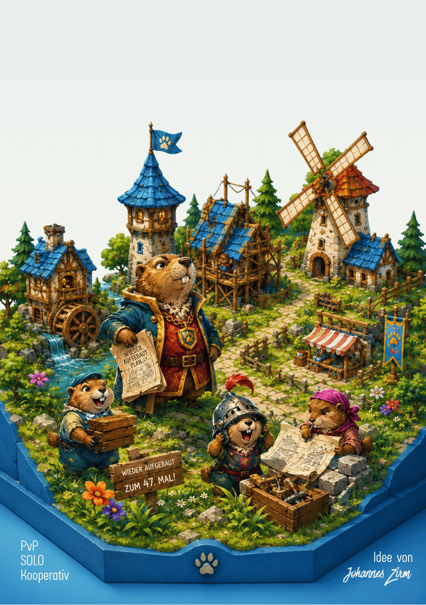

Talwacht
EN
Demo ▶

Talwacht
Bauen · Plündern · Bauen
▶ Demo spielen
Spielmaterial
136
Karten
20
Ritter (graue Klötzchen)
20
Barrieren (Holzstäbchen)
16
Türme (schwarze Zylinder)
20
Pappmünzen
4
Zählscheiben
3
Würfel (gelb, blau, rot)
Spielanleitung →
Solo / Koop / Kampagne & Kartenübersicht
v0.9.63 · Johannes Zirm
Würfel
Richtung
Horde (Anzahl)
Anführer
Jahreszeiten
Winter
Frühling
Sommer
Herbst
Seite 1
←
Weiter →
Solo/Koop/Glossar
Kartenübersicht & Spielmodi
Solo/Koop/Glossar
← Spielanleitung